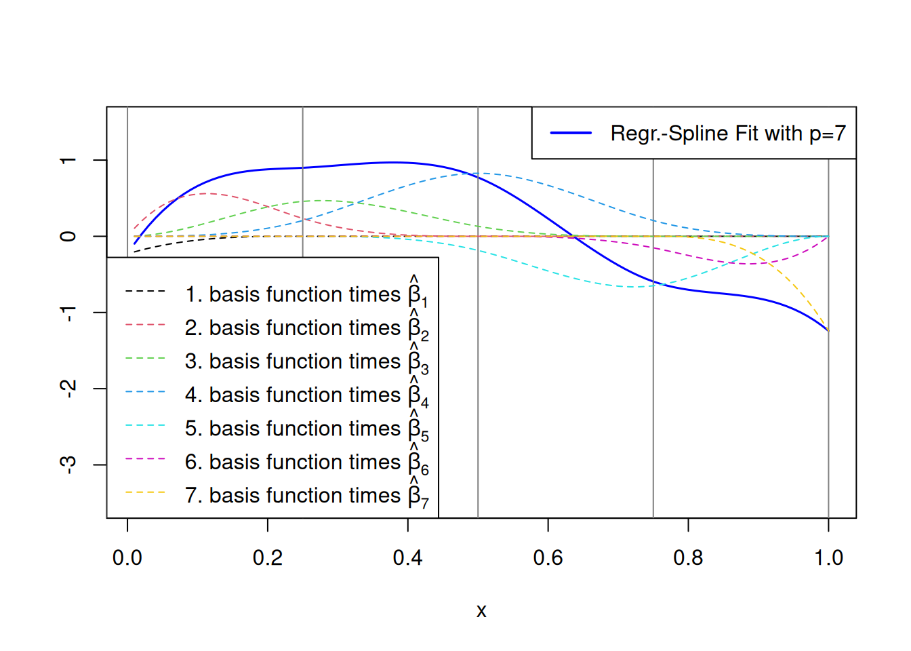

suppressPackageStartupMessages(library("np"))
data("cps71")
plot(cps71$age, cps71$logwage, xlab="Age", ylab="log(wage)")4 Nonparametric Regression
4.1 Introduction
Let us consider the case of univariate nonparametric regression, i.e., with one single explanatory variable \(X\in\mathbb{R}\).
Data: \[ (Y_{1},X_{1}),\dots,(Y_{n},X_{n})\overset{\text{i.i.d}}{\sim}(Y,X) \]
- \(Y_{i}\in \mathbb{R}\) real response variable
- \(X_{i}\in [a,b]\subset \mathbb{R}\) real explanatory variable
- \(n\) sufficiently large sample size (e.g., \(n\geq 40\))
The Nonparametric Regression Model
\[ Y_i=m(X_i)+\varepsilon_i \]
- \(m(X)=\mathbb{E}(Y_i|X=X_i)\) regression function
- \(\mathbb{E}(\varepsilon_i)=0\)
- \(Var(\varepsilon_i|X_i) = Var(\varepsilon_i)=\sigma^2\)
- \(\varepsilon_i\) and \(X_i\) are independent or at least mean-independent, i.e., \(\mathbb{E}(\varepsilon_i|X_i)=0\)
Special cases of parametric regression models:
Linear regression: \(m\) is a straight line \[ m(X)=\beta_0+\beta_1 X \]
Polynomial generalizations: \(m\) is a quadratic or cubic polynomial \[ \begin{align*} m(X)&=\beta_0 +\beta_1 X+\beta_2 X^2\\ \text{or} \quad m(X)&=\beta_0+\beta_1 X+\beta_2 X^2+\beta_3 X^3 \end{align*} \]
Many important applications lead to regression functions possessing a complicated structure. Standard models then are “too simple” and do not provide useful approximations of \(m(x)\).
As George Box is saying it:
“All models are false, but some are useful” (G. Box)
An important point in theoretical analysis is the way how the observations \(X_1,\dots,X_n\) have been generated. One distinguishes between fixed and random design.
- Fixed design: The observation points \(X_1,\dots,X_n\) are fixed (non stochastic) values.
- Example: Crop yield (\(Y\)) in dependence of the amount of fertilizer (\(X\)) used, when the amount is determined deterministically by the experimenter.
- Equidistant Design: (Most important special case of fixed design)
\[ X_{i+1}-X_i=\frac{b-a}{n}. \]
- Random design: The observation points \(X_1,\dots,X_n\) are (realizations of) i.i.d. random variables with density \(f\). The density \(f\) is called “design density”. Throughout this chapter it will be assumed that \(f(x)>0\) for all \(x\in [a,b]\).
- Example: Sample \((Y_1,X_1),\dots,(Y_n,X_n)\) of log-wages (\(Y\)) and age (\(X\)) of randomly selected individuals.
In the case of random design, \(m(x)\) is the conditional expectation of \(Y\) given \(X=x\), \[ m(x)=\mathbb{E}(Y|\ X=x) \]
and \(Var(\varepsilon_i|X_i)=\sigma^2\).
Note
For random design all expectations (as well as variances) have to be interpreted as conditional expectations (variances) given \(X_1,\dots,X_n\).
Example: Canadian cross-section wage data consisting of a random sample taken from the 1971 Canadian Census Public Use Tapes for male individuals having common education (grade 13); see Figure 4.1.
What would be a good/reasonable model assumption for \(m(x)\) to estimate the conditional mean function for the data shown in Figure 4.1?
No specific model assumption
In nonparametric regression analysis, we do not make assumptions about the specific structure of the regression function \(m(x).\) We only make the qualitative assumption that \(m\) is a sufficiently smooth function, i.e. that \(m(t)\) is sufficiently often differentiable at every \(t\in(a,b)\).
4.2 Basis Function Expansions
Some frequently used approaches to nonparametric regression rely on expansions of the form \[ m(x)\approx \sum_{j=1}^p \beta_j b_j(x), \] where \(b_1(x),b_2(x),\dots\) are suitable basis functions \[ b_j:\mathbb{R}\to\mathbb{R},\quad j=1,\dots,p. \]
The basis functions \(b_1,b_2,\dots\) have to be chosen in such a way that for any possible smooth function \(m\) the squared approximation error tends to zero as \(p\rightarrow\infty,\)
\[
\min_{\vartheta_1,\dots,\vartheta_p} \left(m(x)-\sum_{j=1}^p \vartheta_j b_j(x)\right)^2\to 0,\quad p\to\infty.
\] However, for every fixed value \(p,\) we typically have that \[
\min_{\vartheta_1,\dots,\vartheta_p} \left(m(x)-\sum_{j=1}^p \vartheta_j b_j(x)\right)^2 \neq 0
\] which leads to a biased estimation procedure.
For a fixed value \(p,\) an estimator \(\hat m_p\) of \(m\) is determined by \[ \hat m_p(x)=\sum_{j=1}^p \hat\beta_j b_j(x), \] where the coefficients \(\hat\beta_j\) are obtained by ordinary least squares \[ \sum_{i=1}^n \left( Y_i-\sum_{j=1}^p \hat\beta_j \underbrace{b_j(X_i)}_{X_{ij}}\right)^2 =\min_{\vartheta_1,\dots,\vartheta_p} \sum_{i=1}^n \left( Y_i-\sum_{j=1}^p \vartheta_j \underbrace{b_j(X_i)}_{X_{ij}}\right)^2 \] with \[ \hat\beta = \left(\begin{matrix}\hat\beta_1\\ \vdots\\\hat\beta_p\end{matrix}\right)=\left(\mathbf{X}^\top\mathbf{X}\right)^{-1}\mathbf{X}^\top Y, \] where \(\mathbf{X}\) denotes the \((n\times p)\)-dimensional matrix with elements \[ X_{ij}=b_j(X_i), \] \(i=1,\dots,n\) and \(j=1,\dots,p,\) and \(Y=(Y_1,\dots,Y_n)^\top.\)
Examples of basis functions \(b_1(x),\,b_2(x)\,\dots\):
- polynomials (monomial basis)
- spline functions
- wavelets
- Fourier expansions (for periodic functions)
4.2.1 Polynomial Regression
Theoretical Justification: Every smooth function can be well approximated by a polynomial of sufficiently high degree.
Approach:
Monomial basis functions \(b_j(x) = x^{j-1}\), \(\;\;j=1,\dots,p-1.\)
Choose \(p\) (polynomial degree) and fit a polynomial of degree \(p-1\): \[ \min_{\vartheta_1,\dots,\vartheta_p}\sum_{i=1}^n \left(Y_i-\sum_{j=1}^p \vartheta_{j} X^{j-1}\right)^2 \] \[ \Rightarrow\quad {\hat m}_p(X)={\hat \beta}_{1}+\sum_{j=2}^{p-1} {\hat \beta}_{j} X_i^{j-1} \]
This corresponds to an approximation with basis functions \[ \begin{align*} b_1(x)&=1\\[2ex] b_2(x)&=x\\[2ex] b_3(x)&=x^2\\[2ex] \vdots\\[2ex] b_{p}(x)&=x^{p-1} \end{align*} \]
Note
It is only assumed that \(m(x)\) can be approximated by a polynomial \(\hat{m}_p(x)\) of degree \(p\) as \(p\to\infty.\) However, for a given choice of \(p,\) there will usually still exist an approximation error.
Therefore, \(\hat{m}_p(x)\) is typically a biased estimator for given values of \(p,\) and a given value of \(x\in[a,b],\) \[ \begin{align*} \operatorname{Bias}(\hat{m}_p(x))\quad & \neq 0\\ \mathbb{E}(\hat{m}_p(x)) - m(x) & \neq 0. \end{align*} \]
R-Code to Compute Polynomial Regressions:
Generate some artificial data, where the usually unknown \[ m(x)=\sin(5 x) \] with \(x\in[0,1]\):
set.seed(1)
# Generate some data:
n <- 100 # Sample Size
x_vec <- (1:n)/n # Equidistant X
# Gaussian iid error term
e_vec <- rnorm(n = n, mean = 0, sd = .5)
# Dependent variable Y
y_vec <- sin(x_vec * 5) + e_vec
# Save all in a dataframe
db <- data.frame(x=x_vec,y=y_vec)Compute the ordinary least squares regressions of different polynomial regression models:
# Fitting of polynomials to the data (parametric models):
# Constant line fit: (Basis function x^0)
reg_p1 <- lm(y ~ 1, data=db)
# Basis functions: x^0 + ... + x^3
reg_p4 <- lm(y ~ poly(x, degree = 3, raw = TRUE), data=db)
# Basis functions: x^0 + ... + x^6
reg_p7 <- lm(y ~ poly(x, degree = 6, raw = TRUE), data=db)Take a look at the fits:
par(mfrow=c(2,2), mar=c(4.1,4.1,3.1,2.1))
plot(db, main="Truth")
# True (usually unknown) regression function
lines(y=sin(x_vec * 5), x=x_vec, col="blue", lwd=1.5)
## Fit by degree 0 polynomial
plot(db, main="Degree 0")
lines(y=sin(x_vec * 5), x=x_vec, col="blue", lwd=1.5)
lines(y = predict(reg_p1, newdata = db),
x = x_vec, col="red", lwd=1.5)
## Fit by degree 3 polynomial
plot(db, main="Degree 3")
lines(y=sin(x_vec * 5), x=x_vec, col="blue", lwd=1.5)
lines(y = predict(reg_p4, newdata = db),
x = x_vec, col="red", lwd=1.5)
## Fit by degree 6 polynomial
plot(db, main="Degree 6")
lines(y=sin(x_vec * 5), x=x_vec, col="blue", lwd=1.5)
lines(y = predict(reg_p7, newdata = db),
x = x_vec, col="red", lwd=1.5)The quality of the approximation obviously depends on the choice of the model selection parameter \(p\) which serves as a smoothing parameter.
Let’s look at the fits across 200 Monte Carlo replications:
m_true <- sin(x_vec * 5)
n_MCrepl <- 200 # MC-replications
m_hat_p1 <- matrix(NA, n, n_MCrepl)
m_hat_p4 <- matrix(NA, n, n_MCrepl)
m_hat_p7 <- matrix(NA, n, n_MCrepl)
for(r in 1:n_MCrepl){
# Generate some data:
e_vec <- rnorm(n = n, mean = 0, sd = .5)
y_vec <- sin(x_vec * 5) + e_vec
db <- data.frame(x = x_vec,y = y_vec)
# Estimations
reg_p1 <- lm(y ~ 1, data=db)
reg_p4 <- lm(y ~ poly(x, degree = 3, raw = TRUE), data=db)
reg_p7 <- lm(y ~ poly(x, degree = 6, raw = TRUE), data=db)
# Save predictions (y hat)
m_hat_p1[,r] <- predict(reg_p1, newdata = db)
m_hat_p4[,r] <- predict(reg_p4, newdata = db)
m_hat_p7[,r] <- predict(reg_p7, newdata = db)
}
par(mfrow=c(2,2), mar=c(4.1,4.1,3.1,2.1))
plot(db, main="Truth")
lines(y=sin(x_vec * 5), x=x_vec, col="blue", lwd=1.5)
##
subSelect <- 25
matplot(y = m_hat_p1[,1:subSelect],
x = x_vec, type = "l", lty = 1, ylab = "", xlab = "x",
ylim = range(m_hat_p1[,1:subSelect], sin(x_vec * 5)),
col=rep("red",n), lwd=0.5, main = "Degree p=0")
lines(y=sin(x_vec * 5), x=x_vec, col="blue", lwd=1.5)
##
matplot(y = m_hat_p4[,1:subSelect],
x = x_vec, type = "l", lty = 1, ylab = "", xlab = "x",
ylim = range(m_hat_p4[,1:subSelect], sin(x_vec * 5)),
col=rep("red",n), lwd=.5, main = "Degree p=3")
lines(y=sin(x_vec * 5), x=x_vec, col="blue", lwd=1.5)
##
matplot(y = m_hat_p7[,1:subSelect],
x = x_vec, type = "l", lty = 1, ylab = "", xlab = "x",
ylim = range(m_hat_p7[,1:subSelect], sin(x_vec * 5)),
col=rep("red",n), lwd=.5, main = "Degree p=6")
lines(y=sin(x_vec * 5), x=x_vec, col="blue", lwd=1.5)Using the 200 fits from above, we can approximate the
- squared bias \(\left(\operatorname{Bias}(\hat{m}_p(x))\right)^2\) and the
- variance \(Var(\hat{m}_p(x))\)
point-wise at each \(x\)-value in x_vec.
## Pointwise (for each x) biases of \hat{m}(x):
Pt_Bias_p1 <- rowMeans(m_hat_p1) - m_true
Pt_Bias_p4 <- rowMeans(m_hat_p4) - m_true
Pt_Bias_p7 <- rowMeans(m_hat_p7) - m_true
## Pointwise squared biases
Pt_BiasSq_p1 <- Pt_Bias_p1^2
Pt_BiasSq_p4 <- Pt_Bias_p4^2
Pt_BiasSq_p7 <- Pt_Bias_p7^2
## Pointwise (for each x) variances \hat{m}(x):
Pt_Var_p1 <- apply(m_hat_p1, 1, var)
Pt_Var_p4 <- apply(m_hat_p4, 1, var)
Pt_Var_p7 <- apply(m_hat_p7, 1, var)
par(mfrow=c(1,2))
matplot(y = cbind(Pt_BiasSq_p1, Pt_BiasSq_p4, Pt_BiasSq_p7),
x = x_vec, type = "l", col = c(1,2,"darkgreen"),
main = "Pointwise Squared Bias", ylab="", xlab="x")
legend("topleft", col = c(1,2,"darkgreen"), lty = c(1,2,3),
legend = c("Degree p=0", "Degree p=3", "Degree p=6"))
matplot(y = cbind(Pt_Var_p1, Pt_Var_p4, Pt_Var_p7),
x = x_vec, type = "l", col = c(1,2,"darkgreen"),
main = "Pointwise Variance", ylab="", xlab="x")
legend("top", col = c(1,2,"darkgreen"), lty = c(1,2,3),
legend = c("Degree p=0", "Degree p=3", "Degree p=6"))The Bias-Variance Trade-Off:
- \(p\) small:
Variance of the estimator is small, but (squared) bias is large. - \(p\) large:
Variance of the estimator is large, but (squared) bias is small.
Remark
Polynomial regression is not very popular in practice. Reasons are numerical problems in fitting high dimensional polynomials. Furthermore, high order polynomials often posses an erratic, difficult to interpret behavior at the boundaries.
4.2.2 Regression Splines
The practical disadvantages of global basis functions (like polynomials), explain the success of local basis functions. A frequently used system of basis functions are local polynomials, i.e., so-called spline functions.
A spline function is a piece wise polynomial function. They are defined with respect to a pre-specified sequence of \(q\) knots \[ a=\tau_1<\tau_2\leq\dots\leq \tau_{q-1}<\tau_q=b. \] Different specifications of the knot sequence lead to different splines.
More precisely, for a given knot sequence, a spline function \(s(x)\) of degree \(k\) is defined by the following properties:
\(s(x)\) is a polynomial of degree \(k\) (i.e. of order1 \(k+1\)) in every interval \([\tau_j,\tau_{j+1}]\), i.e. \[ s(x)=s_0+s_1x+s_2x^2+\dots+s_kx^{k},\quad x\in[\tau_j,\tau_{j+1}] \] with \(s_0,\dots,s_k\in\mathbb{R}.\)
\(s(x)\) is called a linear spline if \(k=1\)
\(s(x)\) is a quadratic spline if \(k=2\)
\(s(x)\) is a cubic spline if \(k=3\)
\(s(x)\) is \(k-1\) times continuously differentiable at each knot point \(x=\tau_j\), \(j=1,\dots,q\).
In practice, the most frequently used splines are cubic spline functions based on an equidistant sequence of \(q\) knots, i.e., \[ \tau_{j+1}-\tau_j=\tau_j-\tau_{j-1} \] for all \(j=2,\dots,q-1.\)
The space of all spline functions of degree \(k\) defined with respect to a given knot sequence \[ a=\tau_1<\tau_2\leq\dots\leq \tau_{q-1}<\tau_q=b \] is a \[ \begin{array}{lccccc} p & = & \text{number of knots} &+& \text{polynomial degree} & -\;\;1\\ & = & q & + & k & -\;\;1 \end{array} \] dimensional linear function space \[ {\cal{S}}_{k,\tau_1,\dots,\tau_q}=\operatorname{span}(b_{1,k},\dots,b_{p,k}), \] where \(b_{1,k},\dots,b_{p,k}\) denote the basis-functions.
Construction of B-Spline Basis Functions
The so-called B-spline basis functions are almost always used in practice, since they possess a number of advantages from a numerical point of view.
The B-spline basis functions for splines of degree \(k\) are defined with respect to a given knot sequence \[ \underbrace{a=\tau_1}_{\text{lower boundary knot}}\quad {\color{red}<}\quad\overbrace{\tau_2\leq\dots\leq \tau_{q-1}}^{\text{interior knots}}\quad{\color{red}<}\quad\underbrace{\tau_q=b}_{\text{upper boundary knot}}. \]
To construct the B-spline basis functions, one augments the knot sequence by repeating each of the boundary knots \(k+1\) times: \[ \underbrace{\tau_{-(k-1)}=\dots=\tau_0=\tau_1}_{\text{$k+1$ lower boundary knots}}\quad {\color{red}<}\quad\overbrace{\tau_2\leq\dots\leq \tau_{q-1}}^{\text{interior knots}}\quad{\color{red}<}\quad\underbrace{\tau_q=\tau_{q+1}=\dots=\tau_{q+k}}_{\text{$k+1$ upper boundary knots}}. \] Let \[ \tau^\ast_{1}, \dots,\tau^\ast_{q+2k} \] denote the augmented knot sequence after resetting the index to start at \(1.\)
The spline basis functions are calculated by a recursive (over \(l=0,1,\dots,k\)) procedure.
The initial level (\(l=0\)) are piece-wise constant functions \[ b_{j,0}(x)=\left\{ \begin{matrix} 1 & \text{ if } \tau_{j}^*\leq x <\tau_{j+1}^*\\ 0 & \text{ else} \end{matrix} \right., \tag{4.1}\] for \(j=1,\dots,q+2k,\) and \(x\in [a,b].\)
For \(l=1,\dots,k\) the recursion is defined by \[ \begin{align*} b_{j,l}(x) & =\frac{x-\tau_j^*}{\tau_{l+j}^*-\tau_j^*}b_{j,l-1}(x)\\ & +\frac{\tau_{l+j+1}^*-x}{\tau_{l+j+1}^*-\tau_{j+1}^*}b_{j+1,l-1}(x), \end{align*} \tag{4.2}\] \(j=1,\dots,q+2k\), and \(x\in [a,b].\)
Note: The definitions in Equation 4.1 and Equation 4.2 are understood that if the denominator is 0, then the function is defined to be 0. The remaining non-degenerated basis functions are then the \[ b_{j,k},\quad j=1,\dots,p=q+k-1, \] B-spline basis functions.
R-Code to Compute B-Spline Basis Functions:
The following R code generates
\[
p=\underbrace{\texttt{Numbr.of Knots}}_{q=7} + \underbrace{\texttt{degree}}_{k=1} - 1=7
\] linear (\(k=1\)) B-spline basis functions:
library("splines2")
degree <- 1
internal_knots <- seq(from = 0.1, to = 0.9, len = 5)
boundary_knots <- c(0, 1)
## evaluation points (for plotting)
x_vec <- seq(from = boundary_knots[1],
to = boundary_knots[2], len = 100)
X_mat_degree1 <- splines2::bSpline(
x = x_vec,
knots = internal_knots,
degree = degree,
intercept = TRUE,
Boundary.knots = boundary_knots)
matplot(x = x_vec,
y = X_mat_degree1,
type = "l", main = "B-Spline Basis Functions \nDegree 1",
ylab = "", xlab = "x", axes = FALSE)
axis(1)
axis(2)
abline(v = c(boundary_knots[1], internal_knots, boundary_knots[2]),
col = "gray")
Degree 1
Here, the basis functions are piecewise linear (\(k=1\)) functions with local support over at most \(k+1=1+1=2\) knot-intervals. Any spline function \[
\begin{align*}
s &\in\mathcal{S}_{k=1,\tau_1,\dots,\tau_q}\quad(\text{with}\;\;q=5)\\[2ex]
s(x)&= \sum_{j=1}^{7}\vartheta_j b_{j,1}(0)
\end{align*}
\] is \(k-1=1-1=0\) times continuously differentiable at each knot point \(x=\tau_j\), \(j=1,\dots,q\).
The following R code generates
\[
p=\underbrace{\texttt{Numbr.of Knots}}_{q=7} + \underbrace{\texttt{degree}}_{k=2} - 1=8
\] quadratic (\(k=2\)) B-spline basis functions:
library("splines2")
degree <- 2
internal_knots <- seq(from = 0.1, to = 0.9, len = 5)
boundary_knots <- c(0, 1)
## evaluation points (for plotting)
x_vec <- seq(from = boundary_knots[1],
to = boundary_knots[2], len = 100)
X_mat_degree2 <- splines2::bSpline(
x = x_vec,
knots = internal_knots,
degree = degree,
intercept = TRUE,
Boundary.knots = boundary_knots)
matplot(x = x_vec,
y = X_mat_degree2,
type = "l", main = "B-Spline Basis Functions \nDegree 2",
ylab = "", xlab = "x", axes = FALSE)
axis(1)
axis(2)
abline(v = c(boundary_knots[1], internal_knots, boundary_knots[2]),
col = "gray")
Degree 2
Here, the basis functions are piecewise quadratic (\(k=2\)) functions with local support over at most \(k+1=2+1=3\) knot-intervals. Any spline function \[
\begin{align*}
s&\in\mathcal{S}_{k=2,\tau_1,\dots,\tau_q}\quad(\text{with}\;\;q=5)\\[2ex]
s(x)&= \sum_{j=1}^{8}\vartheta_j b_{j,1}(x)
\end{align*}
\] is \(k-1=2-1=1\) times continuously differentiable at each knot point \(x=\tau_j\), \(j=1,\dots,q\).
The following R code generates
\[
p=\underbrace{\texttt{Numbr.of Knots}}_{q=7} + \underbrace{\texttt{degree}}_{k=3} - 1=9
\] cubic (\(k=3\)) B-spline basis functions:
library("splines2")
degree <- 3
internal_knots <- seq(from = 0.1, to = 0.9, len = 5)
boundary_knots <- c(0, 1)
## evaluation points (for plotting)
x_vec <- seq(from = boundary_knots[1],
to = boundary_knots[2], len = 100)
X_mat_degree3 <- splines2::bSpline(
x = x_vec,
knots = internal_knots,
degree = degree,
intercept = TRUE,
Boundary.knots = boundary_knots)
matplot(x = x_vec,
y = X_mat_degree3,
type = "l", main = "B-Spline Basis Functions \nDegree 3",
ylab = "", xlab = "x", axes = FALSE)
axis(1)
axis(2)
abline(v = c(boundary_knots[1], internal_knots, boundary_knots[2]),
col = "gray")
Degree 3 (usual case)
Here, the basis functions are piecewise cubic (\(k=3\)) functions with local support over at most \(k+1=3+1=4\) knot-intervals. Any spline function \[
\begin{align*}
s &\in\mathcal{S}_{k=3,\tau_1,\dots,\tau_q}\quad(\text{with}\;\;q=5)\\[2ex]
s(x) &= \sum_{j=1}^{9} \vartheta_j b_{j,1}(x)
\end{align*}
\] is \(k-1=3-1=2\) times continuously differentiable at each knot point \(x=\tau_j\), \(j=1,\dots,q\).
Note
Normalized: The B-spline basis system has a property that is often useful: the sum of the B-spline basis function values at any point \(x\) is equal to one. Note, for example, that the first and last basis functions are exactly one at the boundaries. This is because all the other basis functions go to zero at these end points.
Compact Support: Basis functions are positive only over at most \(k+1\) intervals and zero over the remaining intervals. This compact support property is important for computational efficiency.
Multiple knots: A multiple interior knot (\(\tau_j=\tau_{j+1}\)) reduces the degree of continuity at that knot value. At a normal interior knot, a spline function is \(k-1\) times continuously differentiable. Each extra knot with the same value reduces continuity at that knot by one. This is the only way to reduce the continuity of the curve at the knot values. If there are \(k\) (or more) equal knots, then you get a discontinuity in the curve at this knot-location.
4.2.2.1 Regression Splines with Equidistant Knots
Remember the nonparametric regression model setup:
\[ Y_i=m(X_i)+\varepsilon_i \]
- \(m(X)=\mathbb{E}(Y_i|X=X_i)\) regression function
- \(\mathbb{E}(\varepsilon_i)=0\)
- \(Var(\varepsilon_i|X_i) = Var(\varepsilon_i)=\sigma^2\)
- \(\varepsilon_i\) and \(X_i\) are independent or at least mean-independent, i.e., \(\mathbb{E}(\varepsilon_i|X_i)=0\)
The so-called regression spline (or B-spline) approach to estimating a regression function \(m(x)\) is based on fitting a set of spline basis functions to the data.
Typically, cubic splines (\(k=3\)) with equidistant knots are applied:
- \(k=3\) (cubic splines)
- \(\tau_1=a\)
- \(\tau_{j+1}=\tau_j + (b-a)/(q-1),\quad j=1,\dots,q-1\)
- such that \(\tau_q=b\)
In this case the number of knots \(q,\) or more precisely the total number of basis functions \(p\) \[ \begin{align*} p &=q+k-1\\[2ex] &=q+2\qquad (\text{using that}\quad k=3) \end{align*} \] serves as the smoothing parameter which has to be selected by the statistician.
For a given choice of \(p,\) let \[ \underset{(n\times p)}{\mathbf{X}} \] denote the \(n\times p\) matrix with elements \[ X_{ij}=b_{j,k}(X_i),\quad i=1,\dots,n,\quad j=1,\dots,p, \] and let \[ Y=(Y_1,\dots,Y_n)^\top \] denote the vector of response variables.
An estimator \(\hat{m}_p(x)\) of \(m(x)\) is then given by \[ \hat m_p(x)=\sum_{j=1}^p \hat\beta_j b_{j,k}(x), \] where the coefficients \(\hat\beta_j\) are determined by ordinary least squares \[ \hat\beta_1,\dots,\hat\beta_p=\arg\min_{\vartheta_1,\dots,\vartheta_p} \sum_{i=1}^n \left( Y_i-\sum_{j=1}^p \vartheta_j \underbrace{b_{j,k}(X_i)}_{X_{ij}}\right)^2. \] That is, the vector of coefficients \[ \hat \beta=(\hat\beta_1,\dots,\hat\beta_p)^\top \] can be written as \[ \hat\beta=(\mathbf{X}^\top \mathbf{X})^{-1} \mathbf{X}^\top Y. \] The fitted values are given by \[ \left(\begin{array}{c} {\hat m}_p(X_1)\\ \vdots%\\ \cdot\\ \cdot \\ {\hat m}_p(X_n) \end{array}\right)=\mathbf{X}\hat\beta=\underbrace{\mathbf{X}(\mathbf{X}^\top \mathbf{X})^{-1}\mathbf{X}^\top}_{=:S_p}Y = S_p Y \]
The matrix \[ S_p = \mathbf{X}(\mathbf{X}^\top \mathbf{X})^{-1}\mathbf{X}^\top \] is referred to as the smoothing matrix.
Remark
Quite generally, the most important nonparametric regression procedures are linear smoothing methods. This means that in dependence of some smoothing parameter (here \(p\)), estimates of the vector \[ (m(X_1),\dots,m(X_n))^\top \] are obtained by multiplying a smoother matrix \(S_p\) with \(Y\).
That is, \[ \left(\begin{array}{c} m(X_1)\\ \vdots%\\ \cdot\\ \cdot \\ m(X_n) \end{array}\right)\approx \left(\begin{array}{c} {\hat m}_p(X_1)\\ \vdots%\\ \cdot\\ \cdot \\ {\hat m}_p(X_n) \end{array}\right)=S_p Y \]
R Code to Compute Regression Splines:
First, we generate some data.
set.seed(1)
# Generate some data: #################
n <- 100 # Sample Size
x_vec <- (1:n)/n # Equidistant X
# Gaussian iid error term
e_vec <- rnorm(n = n, mean = 0, sd = .5)
# Dependent variable Y
y_vec <- sin(x_vec * 5) + e_vecThen, we generate cubic B-spline basis functions with equidistant knot sequence (different to x_vec) and evaluate them at x_vec:
degree <- 3 # piecewise cubic splines
knot_seq_5 <- seq(from = 0, to = 1, len = 5)# knots
X_mat_p7 <- splines2::bSpline(
x = x_vec, # evaluation points
knots = knot_seq_5[-c(1, length(knot_seq_5))],
degree = degree,
intercept = TRUE,
Boundary.knots = knot_seq_5[ c(1, length(knot_seq_5))]
)
knot_seq_15 <- seq(from = 0, to = 1, len = 15)# knots
X_mat_p17 <- splines2::bSpline(
x = x_vec, # evaluation points
knots = knot_seq_15[-c(1, length(knot_seq_15))],
degree = degree,
intercept = TRUE,
Boundary.knots = knot_seq_15[ c(1, length(knot_seq_15))]
) Computing the smoothing matrices \(S_p\) for \(p=7\) and \(p=17\):
S_p7 <- X_mat_p7 %*% solve(t(X_mat_p7) %*% X_mat_p7) %*% t(X_mat_p7)
S_p17 <- X_mat_p17 %*% solve(t(X_mat_p17) %*% X_mat_p17) %*% t(X_mat_p17) Computing the estimates \(\hat{m}_p(X_1),\dots,\hat{m}_p(X_n)\) for \(p=7\) and \(p=17\):
m_hat_p7 <- S_p7 %*% y_vec
m_hat_p17 <- S_p17 %*% y_vecPlotting the estimation results:
plot(y=y_vec, x=x_vec, xlab="X", ylab="Y",
main="Regression Splines")
lines(y=sin(x_vec * 5), x=x_vec, col="red", lty=2, lwd=1.5)
lines(y=m_hat_p7, x=x_vec, col="blue", lwd=1.5)
lines(y=m_hat_p17, x=x_vec, col="darkorange", lwd=1.5)
legend("bottomleft",
c("(Unknown) Regression Function m",
"Regr.-Spline Fit with p=7",
"Regr.-Spline Fit with p=17"),
col=c("red","blue", "darkorange"),
lty=c(2,1,1), lwd=c(2,2,2))The following plot shows the regression spline fit (with \(p=7\)) \[ \hat{m}_{7}(x)=\sum_{j=1}^{7}\hat\beta_j b_{j,3}(x) \] along with the \(p=7\) basis functions each multiplied by the fitted linear coefficient \[ \hat\beta_j b_{j,3}(x),\quad j=1,\dots,7. \]
beta_hat_p7 <- solve(t(X_mat_p7) %*% X_mat_p7) %*% t(X_mat_p7) %*% y_vec
plot(y=m_hat_p7, x=x_vec, ylim = c(-3.5,1.5),
col="blue", lwd=1.5, type = "l", xlab="x", ylab="")
abline(v = knot_seq_5, col = gray(0.5))
matlines(X_mat_p7 * matrix(rep(beta_hat_p7, each = n), ncol=7),
x = x_vec, type="l", lty = 2, col = c(1,2,3,4,5,6,7))
legend("topright",
c("Regr.-Spline Fit with p=7"),
col = "blue", lty= 1, lwd= 2)
legend("bottomleft",
c(expression(paste("1. basis function times ",hat(beta)[1])),
expression(paste("2. basis function times ",hat(beta)[2])),
expression(paste("3. basis function times ",hat(beta)[3])),
expression(paste("4. basis function times ",hat(beta)[4])),
expression(paste("5. basis function times ",hat(beta)[5])),
expression(paste("6. basis function times ",hat(beta)[6])),
expression(paste("7. basis function times ",hat(beta)[7]))
),
col = c(1,2,3,4,5,6,7), lty = 2, lwd = 1) 
4.2.3 Mean Average Squared Error of Regression Splines
In a nonparametric regression context we do not assume that the unknown true regression function \(m(x)\) exactly corresponds to a spline function. Thus, \[ \hat m_p=(\hat{m}_p(X_1),\dots,\hat{m}_p(X_n))^\top \] typically possesses a systematic estimation error (bias). That is, \[ \mathbb{E}_\varepsilon(\hat{m}_p(X_i))\neq m(X_i). \]
To simplify notation, we will in the following write \[ \mathbb{E}_\varepsilon(\cdot)\quad\text{and}\quad Var_\varepsilon(\cdot) \] to denote expectation and variance “with respect to the random variable \(\varepsilon\), only”.
In the case of random design, \[ \mathbb{E}_\varepsilon(\cdot)\quad\text{and}\quad Var_\varepsilon(\cdot) \] thus denote the conditional expectation \[ \mathbb{E}(\cdot|X_1,\dots,X_n) \] and the conditional variance \[ Var(\cdot|X_1,\dots,X_n) \] given the observed \(X\)-values.
For random design, these conditional expectations depend on the observed sample, and thus are random. For fixed design, such expectations are of course fixed values.
It will always be assumed that the matrix \[ \mathbf{X}^\top \mathbf{X}, \] with \(\mathbf{X}=(b_{j,k}(X_i))_{i,j}\), is invertible (under our conditions on the design density this holds with probability 1 for the random design).
The behavior of nonparametric function estimates is usually evaluated with respect to quadratic risk (i.e. mean squared error).
A commonly used global measure of accuracy of a spline estimator \(\hat m_p\) is the Mean Average Squared Error (MASE), which averages the local (at each \(X_i\)) mean squared errors over all \(X_i,\) \(i=1,\dots,n:\) \[ \begin{align*} &\operatorname{MASE}(\hat m_p):=\frac{1}{n}\sum_{i=1}^n \mathbb{E}_\varepsilon\left(m(X_i)-\hat{m}_p(X_i)\right)^2\\ = &\frac{1}{n}\sum_{i=1}^n \underbrace{\left(\mathbb{E}_\varepsilon(\hat{m}_p(X_i))-m(X_i)\right)^2}_{(\operatorname{Bias}_\varepsilon(\hat{m}_p(X_i)))^2} + \\[2ex] &\frac{1}{n}\sum_{i=1}^n \underbrace{\mathbb{E}_\varepsilon\left((\hat{m}_p(X_i)-\mathbb{E}_\varepsilon(\hat{m}_p(X_i))\right)^2}_{Var_\varepsilon(\hat{m}_p(X_i))} \end{align*} \]
Another frequently used measure is the Mean Integrated Squared Error (MISE): \[ \begin{align*} \operatorname{MISE}(\hat m_p):=\int_a^b \mathbb{E}_\varepsilon\left(m(x)-\hat m_p(x)\right)^2dx \end{align*} \]
MASE versus MISE:
- Equidistant design: \[ \operatorname{MISE}(\hat m_p)=\operatorname{MASE}(\hat m_p) + O(n^{-1}) \]
- MISE and MASE are generally not asymptotically equivalent in the case of random design \[ \operatorname{MASE}(\hat m_p)=\int_a^b \mathbb{E}_\varepsilon\left(m(x)-\hat m_p(x)\right)^2 f(x)dx + O_P(n^{-1}). \]
Landau symbol “Big Oh” \(O(r_n)\)
\[ O(r_n)\quad\text{with}\quad r_n>0,\;n=1,2,\dots \] is a placeholder symbol describing the family of all sequences \(x_n\), \(n=1,2,\dots,\) such that
- \(\dfrac{|x_n|}{r_n}\to c\) as \(n\to\infty,\) where \(c\) is a constant with \(0\leq c < \infty.\)
Note: This includes the case \(\dfrac{|x_n|}{r_n}\to 0.\)
Examples:
- \(-\dfrac{1}{n}=O(n^{-1})\)
- \(\dfrac{1}{n^2}=O(n^{-2})\)
- \(\dfrac{1}{n^2}=O(n^{-1})\)
- \(\displaystyle\frac{1}{m}\sum_{j=1}^{m-1} g\left(x_j\right)(x_{j+1}-x_j) = \int_a^b g(x)dx + O(m^{-1})\),
where \(x_j=a+\dfrac{j-1}{m-1}(b-a)\) for sufficiently smooth (continuously differentiable over \((a,b)\)) \(g\).
Landau symbol “Small oh” \(o(r_n)\)
\[ o(r_n)\quad\text{with}\quad r_n>0,\;n=1,2,\dots \] is a placeholder symbol describing the family of all sequences \(x_n\), \(n=1,2,\dots,\) such that
- \(\dfrac{|x_n|}{r_n}\to 0\) as \(n\to\infty.\)
Examples:
- \(\dfrac{1}{n^2}=o(n^{-1})\)
- \(n^{-a}=o(n^{-b})\) for all \(a>b>0.\)
Note: For every sequence \(x_n=o(r_n)\) it holds that \(x_n=O(r_n),\) but not the other way round.
Special Cases \(O(1)\) and \(o(1)\)
\[ O(1)\quad \text{and}\quad o(1) \]
Examples:
- \(1 + \dfrac{1}{n} = O(1)\)
- \(\dfrac{1}{n^2}=o(1)\)
Stochastic Landau symbol “Big Oh P” \(O_P(r_n)\)
\[ O_P(r_n)\quad\text{with}\quad r_n>0,\;n=1,2,\dots \] is a placeholder symbol describing the family of all stochastic sequences \(X_n\), \(n=1,2,\dots,\) for which
- there exists for each (small) \(\epsilon>0\) a sufficiently large threshold \(\delta>0\) such that \(\displaystyle P\left(\frac{|X_n|}{r_n}>\delta\right)<\epsilon\) for all sufficiently large \(n\).
Plain English: “such that \(\frac{|X_n|}{r_n}\) is bounded in probability for all large enough \(n\)”
Example:
- If \(\displaystyle \sqrt{n}(\bar{X}_n-\mu)\to_d\mathcal{N}(0,\sigma^2),\) then \[ \begin{align*} \sqrt{n}(\bar{X}_n-\mu) &= O_P(1)\\[2ex] (\bar{X}_n-\mu) &= O_P(n^{-1/2}) \end{align*} \]
Stochastic Landau symbol “Small oh P” \(o_P(r_n)\)
\[ o_P(r_n)\quad\text{with}\quad r_n>0,\;n=1,2,\dots \] is a placeholder symbol describing the family of all stochastic sequences \(X_n\), \(n=1,2,\dots,\) such that
- \(\displaystyle \frac{|X_n|}{r_n}\to_P 0\quad\) as \(\quad n\to\infty\)
Example:
- If \(\displaystyle \sqrt{n}(\bar{X}_n-\mu)\to_d\mathcal{N}(0,\sigma^2),\) then \[ \begin{align*} (\bar{X}_n-\mu) &= o_P(1) \end{align*} \]
In the following we focus on the MASE which has the advantage that we can use matrix algebra.
First, we look at the local bias of \(\hat{m}_p(X_i)\) at a single evaluation point \(X_i:\) \[ \operatorname{Bias}_\varepsilon(\hat{m}_p(X_i))=\mathbb{E}_\varepsilon(\hat m_p(X_i))-m(X_i), \] where \[ \begin{align*} \mathbb{E}_\varepsilon(\hat m_p(X_i))&=\mathbb{E}_\varepsilon\Big(\sum_{j=1}^p \hat{\beta}_j b_{j,k}(X_i)\Big)\\ &=\sum_{j=1}^p\mathbb{E}_\varepsilon(\hat{\beta}_j) b_{j,k}(X_i), \end{align*} \] with \[ \hat{\beta}=\left(\begin{matrix}\hat{\beta}_1\\\vdots\\\hat{\beta}_p\end{matrix}\right)=(\mathbf{X}^\top\mathbf{X})^{-1}\mathbf{X}^\top Y \] and with \[ \begin{align*} \mathbb{E}_\varepsilon(\hat\beta) &=\mathbb{E}_\varepsilon\Big((\mathbf{X}^\top \mathbf{X})^{-1}\mathbf{X}^\top (\overbrace{m+\varepsilon}^{=Y})\Big)\\[2ex] &=\mathbb{E}_\varepsilon\Big((\mathbf{X}^\top \mathbf{X})^{-1}\mathbf{X}^\top m\Big)\;+\;\mathbb{E}_\varepsilon\Big((\mathbf{X}^\top \mathbf{X})^{-1}\mathbf{X}^\top \varepsilon\Big)\\[2ex] &=\overbrace{(\mathbf{X}^\top \mathbf{X})^{-1}\mathbf{X}^\top m}^{=(\beta_1,\dots,\beta_p)^\top=\beta}\;+\;\underbrace{(\mathbf{X}^\top \mathbf{X})^{-1}\mathbf{X}^\top \overbrace{\mathbb{E}_\varepsilon(\varepsilon)}^{=0}}_{=0}\\[2ex] &=(\beta_1,\dots,\beta_p)^\top=\beta \end{align*} \] where \[ m=\left(\begin{matrix}m(X_1)\\\vdots\\m(X_n)\end{matrix}\right) \] denotes the vector of true function values, and \[ \varepsilon=\left(\begin{matrix}\varepsilon_1\\\vdots\\\varepsilon_n\end{matrix}\right) \] denotes the vector of error terms.
That is, the mean of the spline regression estimator evaluated at \(X_i\) is given by \[ \mathbb{E}_\varepsilon(\hat m_p(X_i)) = \sum_{j=1}^p\beta_j b_{j,k}(X_i), \] where \[ \beta=\left(\begin{matrix}\beta_1\\\vdots\\\beta_p\end{matrix}\right)=(\mathbf{X}^\top \mathbf{X})^{-1}\mathbf{X}^\top m \] is a least squares solution; namely of the following least squares problem that tries to approximate the unknown vector \(m=(m(X_1),\dots,m(X_n))^\top\) using a spline function \(s\in {\cal{S}}_{k,\tau_1,\dots,\tau_q}:\) \[ \begin{align*} &\sum_{i=1}^n \left(m(X_i)-\sum_{j=1}^p \beta_j b_{j,k}(X_i)\right)^2\\[2ex] &=\min_{\vartheta_1,\dots,\vartheta_p}\sum_{i=1}^n \left(m(X_i)-\sum_{j=1}^p \vartheta_j b_{j,k}(X_i)\right)^2\\[2ex] &=\min_{s\in {\cal{S}}_{k,\tau_1,\dots,\tau_q}} \sum_{i=1}^n \left(m(X_i)-s(X_i)\right)^2. \end{align*} \]
That is, the mean of the spline regression estimator evaluated at \(X_i\) \[ \mathbb{E}_\varepsilon(\hat m_p(X_i))=\sum_{j=1}^p \beta_j b_j(X_i)=:\tilde m_p(X_i) \] is the best least squares (\(L_2\)) approximation of the true, but unknown, regression function vector \(m=(m(X_1),\dots,m(X_n))^\top\) by means of a spline function vector \(s=(s(X_1),\dots,s(X_n))^\top\) with \(s\in{\cal{S}}_{k,\tau_1,\dots,\tau_q}.\)
Important
If the true, but unknown, regression function \(m\) happens to be an element of the space of spline functions \({\cal{S}}_{k,\tau_1,\dots,\tau_q},\) then \[
\operatorname{Bias}_\varepsilon(\hat m_p(X_i)) = \tilde m_p(X_i) - m(X_i) = 0,\quad i=1,\dots,n.
\] However, generally we do not expect that \(m\) is actually an element of \({\cal{S}}_{k,\tau_1,\dots,\tau_q},\) such that
\[
\operatorname{Bias}_\varepsilon(\hat m_p(X_i)) = \tilde m_p(X_i) - m(X_i) \neq 0,\quad i=1,\dots,n.
\] For consistency, however, we need that \[
\operatorname{Bias}_\varepsilon(\hat m_p(X_i)) = \tilde m_p(X_i) - m(X_i) \to 0,\quad i=1,\dots,n.
\] as \(n\to\infty\) and \(p\equiv p_n\to\infty;\) i.e. that \(m\) becomes eventually an element of the then very large space \({\cal{S}}_{k,\tau_1,\dots,\tau_{q_n}}\) as \(q_n\to\infty\) with \(n\to\infty.\)
From the general approximation properties of cubic splines (\(k=3\)) with \(q=p-2\) equidistant knots (De Boor and De Boor (1978) or Eubank (1999)), we know that:
If \(m\) is twice continuously differentiable over \((a,b)\), then \[ \begin{align*} &(\operatorname{Bias}_\varepsilon(\hat m_p))^2\\[2ex] &=\frac{1}{n}\sum_{i=1}^n (\operatorname{Bias}_\varepsilon(\hat m_p(X_i)))^2\\[2ex] &=\frac{1}{n}\sum_{i=1}^n \left(\tilde m_p(X_i) - m(X_i)\right)^2 =\left\{\begin{array}{ll} O(p^{-4})&\quad\text{fixed design}\\ O_p(p^{-4})&\quad\text{random design}\\ \end{array} \right. \end{align*} \]
If \(m\) is four times continuously differentiable, then \[ \begin{align*} &(\operatorname{Bias}_\varepsilon(\hat m_p))^2\\ &=\frac{1}{n}\sum_{i=1}^n (\operatorname{Bias}_\varepsilon(\hat m_p(X_i)))^2\\[2ex] &=\frac{1}{n}\sum_{i=1}^n\left(\tilde m_p(X_i) - m(X_i)\right)^2 =\left\{\begin{array}{ll} O(p^{-8})&\quad\text{fixed design}\\ O_p(p^{-8})&\quad\text{random design}\\ \end{array} \right. \end{align*} \]
The next step is to compute the (average) variance of the estimator, which can be obtained by the usual type of arguments applied in parametric regression: \[ \begin{align*} Var_\varepsilon(\hat m_p) &=\frac{1}{n}\sum_{i=1}^nVar_\varepsilon(\hat{m}_p(X_i))\\[2ex] &=\frac{1}{n}\sum_{i=1}^n\mathbb{E}_\varepsilon\big((\hat{m}_p(X_i)-\overbrace{\tilde{m}(X_i)}^{=\mathbb{E}_\varepsilon(\hat{m}_p(X_i))})^2\big)\\[2ex] %\frac{1}{n}\mathbb{E}_\varepsilon\left(\Vert \mathbf{X}(\mathbf{X}^\top \mathbf{X})^{-1}\mathbf{X}^\top Y- % \mathbf{X}(\mathbf{X}^\top \mathbf{X})^{-1}\mathbf{X}^\top \tilde m_p\Vert_2^2\right)\\ &=\frac{1}{n}\mathbb{E}_\varepsilon\left(\left\Vert \left(\begin{matrix}\hat{m}_p(X_1)\\\vdots\\\hat{m}_p(X_n)\end{matrix}\right)-\left(\begin{matrix}\tilde{m}_p(X_1)\\\vdots\\\tilde{m}_p(X_n)\end{matrix}\right)\right\Vert_{2}^2\right)\\[2ex] &=\frac{1}{n}\mathbb{E}_\varepsilon\left(\Vert \mathbf{X}(\mathbf{X}^\top \mathbf{X})^{-1}\mathbf{X}^\top Y- \mathbf{X}(\mathbf{X}^\top \mathbf{X})^{-1}\mathbf{X}^\top m\Vert_2^2\right)\\[2ex] &=\frac{1}{n}\mathbb{E}_\varepsilon\left(\Vert \mathbf{X}(\mathbf{X}^\top \mathbf{X})^{-1}\mathbf{X}^\top (Y-m)\Vert_2^2\right)\\[2ex] &=\frac{1}{n}\mathbb{E}_\varepsilon\left(\Vert \mathbf{X}(\mathbf{X}^\top \mathbf{X})^{-1}\mathbf{X}^\top \varepsilon\Vert_2^2\right)\\[2ex] &= \frac{1}{n}\mathbb{E}_\varepsilon\Big(\underbrace{\varepsilon^\top (\mathbf{X}(\mathbf{X}^\top \mathbf{X})^{-1}\mathbf{X}^\top )^\top}_{(1\times n)}\;\;\underbrace{\mathbf{X}(\mathbf{X}^\top \mathbf{X})^{-1}\mathbf{X}^\top \varepsilon}_{(n\times 1)}\Big)\\[2ex] &= \frac{1}{n}\mathbb{E}_\varepsilon\Big(\underbrace{\varepsilon^\top (\mathbf{X}(\mathbf{X}^\top \mathbf{X})^{-1}\mathbf{X}^\top )}_{(1\times n)}\;\;\underbrace{\mathbf{X}(\mathbf{X}^\top \mathbf{X})^{-1}\mathbf{X}^\top \varepsilon}_{(n\times 1)}\Big)\\[2ex] &= \frac{1}{n}\mathbb{E}_\varepsilon\Big(\underbrace{\varepsilon^\top \mathbf{X}(\mathbf{X}^\top \mathbf{X})^{-1}\mathbf{X}^\top \varepsilon}_{(1\times 1)}\Big)\\[2ex] &= \frac{1}{n}\mathbb{E}_\varepsilon\left(\operatorname{trace}\left(\varepsilon^\top \mathbf{X}(\mathbf{X}^\top \mathbf{X})^{-1}\mathbf{X}^\top \varepsilon\right)\right)\\[2ex] &= \frac{1}{n}\mathbb{E}_\varepsilon\left(\operatorname{trace}\left( (\mathbf{X}^\top \mathbf{X})^{-1}\mathbf{X}^\top \varepsilon\varepsilon^\top\mathbf{X}\right)\right)\\[2ex] &=\frac{1}{n}\operatorname{trace}\left((\mathbf{X}^\top \mathbf{X})^{-1}\mathbf{X}^\top \mathbb{E}_\varepsilon(\varepsilon\varepsilon^\top ) \mathbf{X}\right)\quad(\text{with }\mathbb{E}_\varepsilon(\varepsilon\varepsilon^\top )=I_n\sigma_\varepsilon)\\[2ex] &=\frac{1}{n} \sigma^2 \text{trace}\left((\mathbf{X}^\top \mathbf{X})^{-1}\mathbf{X}^\top \mathbf{X}\right)\\[2ex] &=\frac{1}{n} \sigma^2 \text{trace}\left(I_p\right)\\[2ex] &=\sigma^2 \frac{p}{n} \end{align*} \]
Trace-Trick
For any \((m\times n)\) matrix \(A\) and any \((n\times m)\) matrix \(B\) we have the identity \[\text{trace}(AB)=\text{trace}(BA)\]
Summary
For cubic (\(k=3\)) splines with \(q\) equidistant knots and a twice differentiable function \(m\) we have that:
\[ \begin{align*} \displaystyle(\operatorname{Bias}_\varepsilon(\hat m_p))^2&=\left\{\begin{array}{ll} O(p^{-4})&\quad\text{fixed design}\\ O_p(p^{-4})&\quad\text{random design}\\ \end{array} \right.\\[2ex] \displaystyle Var_\varepsilon(\hat m_p)&= \sigma^2\frac{p}{n}, \end{align*} \tag{4.3}\] where \(p=q+2\) is the number of basis functions (i.e. the smoothing parameter).
This leads to the classical trade-off between (average) squared bias and (average) variance that is typical for nonparametric statistics:
- \(p\) small:
\(\displaystyle Var_\varepsilon(\hat m_p)\) is small, but squared bias \(\displaystyle (\operatorname{Bias}_\varepsilon(\hat m_p))^2\) is large. - \(p\) large:
\(\displaystyle Var_\varepsilon(\hat m_p)\) is large, but squared bias \(\displaystyle (\operatorname{Bias}_\varepsilon(\hat m_p))^2\) is small.
Focus now, on the case of a fixed design. From Equation 4.3 we have that \[ \begin{align*} \operatorname{MASE}(\hat m_{p}) &= (\operatorname{Bias}_\varepsilon(\hat m_p))^2 + Var_\varepsilon(\hat m_p)\\[2ex] &=O(p^{-4}) + \sigma^2\frac{p}{n} \end{align*} \]
Thus, if \[ p\equiv p_n\to\infty\quad\text{as}\quad n\to\infty, \] but sufficiently slow, such that \[ \dfrac{p_n}{n}\to 0, \] then \[ \begin{align*} \operatorname{MASE}(\hat m_{p}) &= (\operatorname{Bias}_\varepsilon(\hat m_p))^2 + Var_\varepsilon(\hat m_p)\to 0 \end{align*} \] as \(n\to 0.\)
An optimal smoothing parameter \(p_{opt}\) that minimizes \(\operatorname{MASE}(\hat m_{p})\) will balance the squared bias and variance: \[ \begin{align*} \frac{d}{d\,p}\operatorname{MASE}(\hat m_{p}) &=\frac{d}{d\,p}\left(\texttt{const}\cdot p^{-4}+\sigma^2\frac{p}{n}\right)\\[2ex] &=-4\cdot\texttt{const}\cdot p^{-5}+\sigma^2\frac{1}{n}. \end{align*} \] Setting zero and solving for \(p_{opt}\) yields \[ p_{opt}=\texttt{const}\cdot\left(\frac{1}{n}\right)^{-1/5}, \] where \(\texttt{const}\) denotes here a generic factor collecting all factors that do not depend on \(p\) or \(n.\)
The optimal rate of \(p\) is thus \[ p_{opt}=\texttt{const} \cdot n^{1/5}. \]
Thus \[ \operatorname{MASE}(\hat m_{p_{opt}})=O_p(n^{-4/5}). \]
Note
For an estimator \(\hat m\) based on a valid (!) parametric model we have \[ \operatorname{MASE}(\hat m_{p_{opt}})=O_p(n^{-1}), \] since parametric models have no bias—provided, the model assumption is correct.
Similar results can be obtained for the mean integrated squared error (MISE): If \(m\) is twice continuously differentiable, and \(p_{opt} \sim n^{1/5}\), then \[ \operatorname{MISE}(\hat m_{p_{opt}})=\mathbb{E}_\varepsilon\left(\int_a^b(m(x)-\hat m_{p_{opt}}(x))^2dx\right)=O_p(n^{-4/5}). \]
4.3 Selecting the Smoothing Parameter \(p\)
Problem: Since \(m\) is unknown, we cannot directly compute \(\operatorname{MASE}(\hat{m}_p)\) and thus cannot compute the exact value of \(p_{opt}\). However, we need to choose the smoothing parameter \(p\) in an (somehow) optimal and objective manner.
Approach: Determine an estimate \(\hat p_{opt}\) of the unknown optimal smoothing parameter \(p_{opt}\) by minimizing a suitable error criterion with the following properties:
- For every possible \(p\) the error criterion function can be calculated from the data.
- For every possible \(p\) the error criterion provides “information” about the respective \(\operatorname{MASE}(\hat{m}_p)\).
Recall: We have \[
\hat m_p=
\left(\begin{matrix}
\hat m_p(X_1)\\ \vdots\\\hat m_p(X_n)
\end{matrix}\right)=\mathbf{X}\hat\beta=\mathbf{X}(\mathbf{X}^\top \mathbf{X})^{-1}\mathbf{X}^\top Y=S_pY,
\] where
\[
\begin{align*}
\operatorname{trace}(S_p)
&=\operatorname{trace}\big(\mathbf{X}(\mathbf{X}^\top \mathbf{X})^{-1}\mathbf{X}^\top\big)\\[2ex]
&=\operatorname{trace}\big((\mathbf{X}^\top \mathbf{X})^{-1}\mathbf{X}^\top\mathbf{X}\big)\\[2ex]
&=\operatorname{trace}\big(I_p\big)=p
\end{align*}
\]
That is, for given \(p\), the number of parameters to estimate by the spline method (one also speaks of the “degrees of freedom” of the smoothing procedure) is equal to \(p\) which corresponds to the trace of the smoother matrix \(S_p=\mathbf{X}(\mathbf{X}^\top \mathbf{X})^{-1}\mathbf{X}^\top.\)
Most frequently used error criteria are Cross-Validation (CV) and Generalized Cross-Validation (GCV).
4.3.1 Leave One Out Cross-Validation (LOOCV)
For a given value \(p,\) cross-validation tries to approximate the out-of-sample prediction error \[ \operatorname{LOOCV}(p)=\frac{1}{n} \sum_{i=1}^n\biggl( Y_i- {\hat m}_{p,-i}(X_i)\biggr)^2 \] Here, for any \(i=1,\dots,n\), \({\hat m}_{p,-i}(\cdot)\) is the “leave-one-out” estimator of \(m(\cdot)\) to be obtained when a spline function is fitted using the \(n-1\) observations: \[ (Y_1,X_1),\dots,(Y_{i-1},X_{i-1}),(Y_{i+1},X_{i+1}),\dots,(Y_{n},X_{n}). \] Motivation: We have \[ \begin{align*} &\mathbb{E}_\varepsilon(\operatorname{LOOCV}(p))\\[2ex] = & \frac{1}{n}\sum_{i=1}^n \mathbb{E}_\varepsilon\left[\biggl( \overbrace{m(X_i)+\varepsilon_i}^{=Y_i}- {\hat m}_{p,-i}(X_i)\biggr)^2\right]\\[2ex] = & \frac{1}{n}\sum_{i=1}^n \mathbb{E}_\varepsilon\left[\left(\left( m(X_i)- {\hat m}_{p,-i}(X_i) \right)^2 +2\left( m(X_i)- {\hat m}_{p,-i}(X_i) \right)\varepsilon_i +\varepsilon_i^2\right)\right]\\[2ex] = &\underbrace{\frac{1}{n}\sum_{i=1}^n \mathbb{E}_\varepsilon\left[\left(m(X_i)- {\hat m}_{p,-i}(X_i)\right)^2\right]}_{\operatorname{MASE}(\hat m_p)} \\[2ex] &+ 2\frac{1}{n} \sum_{i=1}^n \underbrace{\mathbb{E}_\varepsilon\left[( m(X_i)- {\hat m}_{p,-i}(X_i))\varepsilon_i\right]}_{=0}+\sigma^2 \end{align*} \] Thus, \[ \begin{align*} \mathbb{E}_\varepsilon(\operatorname{LOOCV}(p)) = \operatorname{MASE}(\hat m_p) + \sigma^2, \end{align*} \] such that \[ \begin{align*} p_{opt} &= \arg\min_p\mathbb{E}_\varepsilon(\operatorname{LOOCV}(p))\\[2ex] &= \arg\min_p\operatorname{MASE}(\hat m_p). \end{align*} \] That is, at least on average, minimizing \(CV(p)\) is equivalent to minimizing \(\operatorname{MASE}(\hat m_p)\).
R-Code to Compute an Estimate of the Optimal Smoothing Parameter using LOOCV
First, we generate some data.
set.seed(1)
# Generate some data: #################
n <- 100 # Sample Size
x_vec <- (1:n)/n # Equidistant X
# Gaussian iid error term
e_vec <- rnorm(n = n, mean = 0, sd = .5)
# Dependent variable Y
y_vec <- sin(x_vec * 5) + e_vecThen, compute the CV scores for different numbers of basis functions \(p\) and plot them to select an estimate for the optimal value of the smoothing parameter \(p\).
p_vec <- 6:12
LOOCV_p <- numeric(length(p_vec))
for(j in 1:length(p_vec)){
p <- p_vec[j] # number of basis functions
q <- p - 2 # number of equidistant knots
knot_seq <- seq(from = 0, to = 1, len = q)# knots
X_mat <- splines2::bSpline(
x = x_vec, # evaluation points
knots = knot_seq[-c(1, length(knot_seq))],
degree = degree,
intercept = TRUE,
Boundary.knots = knot_seq[ c(1, length(knot_seq))]
)
LOOCV_scoreSq <- numeric(n)
for(i in 1:n){
m_hat_p_i <- X_mat[i,] %*%
solve(t(X_mat[-i,]) %*% X_mat[-i,]) %*% t(X_mat[-i,]) %*% y_vec[-i]
LOOCV_scoreSq[i] <- (y_vec[i] - m_hat_p_i)^2
}
LOOCV_p[j] <- mean(LOOCV_scoreSq)
}
plot(y = LOOCV_p, x = p_vec, type="o")
4.3.2 \(k\)-fold Cross-Validation
In practice, one usually works with \(k\)-fold CV (\(k=5\) or \(k=10\)). For this the index set \(I=\{1,\dots,n\}\) is partitioned into \(k\) disjoint index sets \(I_1,\dots,I_k\) of (roughly) equal sizes, i.e. \(|I_1|\approx|I_2|\approx\dots\approx|I_k|\), such that \(I_1\cup I_1\cup \dots \cup I_k=I\) and \(I_j\cap I_k=\emptyset\) for all \(j\neq k\). \[ \operatorname{CV}_k(p)=\frac{1}{k}\sum_{k=1}^K\frac{1}{|I_k|} \sum_{i\in I_k}\left( Y_i- {\hat m}_{p,-I_k}(X_i)\right)^2. \]
4.3.3 Generalized Cross-Validation (GCV)
\[ \operatorname{GCV}(p)=\frac{1}{n\left(1-\frac{p}{n}\right)^2}\sum_{i=1}^n \left( Y_i- {\hat m}_p(X_i)\right)^2 \] Motivation: The average residual sum of squares are given by \[ \operatorname{ARSS}(p):=\frac{1}{n}\sum_{i=1}^n\biggl( Y_i- \hat{m}_{p}(X_i)\biggr)^2 \tag{4.4}\] which allows us to rewrite \(\operatorname{GCV}(p)\) as \[ \operatorname{GCV}(p)=\frac{1}{\left(1-\frac{p}{n}\right)^2}\operatorname{ARSS}(p) \] Some lengthy derivations show that the expected value of \(\operatorname{ARSS}(p)\) is \[ \begin{align*} \mathbb{E}_\varepsilon(\operatorname{ARSS}(p))=\operatorname{MASE}(\hat m_p)-2\sigma^2\frac{p}{n}+\sigma^2 \end{align*} \tag{4.5}\] Moreover, a Taylor expansion of \(f(p)=\frac{1}{\left(1-\frac{p}{n}\right)^2}\) around \(f(0)\) yields that \[ \frac{1}{\left(1-\frac{p}{n}\right)^2}\approx 1 + 2\frac{p}{n}, \] where the approximation becomes precise as \(\frac{p}{n}\to 0.\) Thus \[ \begin{align*} \mathbb{E}_\varepsilon(\operatorname{GCV}(p)) &\approx \left(1 + 2\frac{p}{n}\right)\mathbb{E}_\varepsilon(\operatorname{ARSS}(p)) \\[2ex] &=\left(1 + 2\frac{p}{n}\right) \left(\operatorname{MASE}(\hat m_p)-2\sigma^2\frac{p}{n}+\sigma^2\right)\\[2ex] &= \operatorname{MASE}(\hat m_p) +\sigma^2 +\\[2ex] &+ \underbrace{2\frac{p}{n} \operatorname{MASE}(\hat m_p)}_{=O_p\left(\frac{p}{n}\right)} - \underbrace{4\frac{p^2}{n^2} \sigma^2}_{=O\left(\frac{p^2}{n^2}\right)=o\left(\frac{p}{n}\right)}\\[2ex] &= \operatorname{MASE}(\hat m_p) +\sigma^2 + O_p\left(\frac{p}{n}\right) \end{align*} \]
Thus, at least on average, minimizing \(\operatorname{GCV}(p)\) is approximately (for \(p_n/n\to 0\) as \(n\to\infty\)) equivalent to minimizing \(\operatorname{MASE}(\hat m_p),\) since \(\sigma^2\) does not depend on \(p.\)
R-Code to Compute an Estimate of the Optimal Smoothing Parameter using GCV
First, we generate some data.
set.seed(1)
# Generate some data: #################
n <- 100 # Sample Size
x_vec <- (1:n)/n # Equidistant X
# Gaussian iid error term
e_vec <- rnorm(n = n, mean = 0, sd = .5)
# Dependent variable Y
y_vec <- sin(x_vec * 5) + e_vecThen, compute the GCV scores for different numbers of basis functions \(p\) and plot them to select an estimate for the optimal value of the smoothing parameter \(p\).
p_vec <- 6:12
GCV_p <- numeric(length(p_vec))
for(j in 1:length(p_vec)){
p <- p_vec[j] # number of basis functions
q <- p - 2 # number of equidistant knots
knot_seq <- seq(from = 0, to = 1, len = q)# knots
X_mat <- splines2::bSpline(
x = x_vec, # evaluation points
knots = knot_seq[-c(1, length(knot_seq))],
degree = degree,
intercept = TRUE,
Boundary.knots = knot_seq[ c(1, length(knot_seq))]
)
S_p <- X_mat %*% solve(t(X_mat) %*% X_mat) %*% t(X_mat)
m_hat_p <- S_p %*% y_vec
ARSS <- mean(c(y_vec - m_hat_p)^2)
GCV_p[j] <- ARSS/((1-p/n)^2)
}
plot(y = GCV_p, x = p_vec, type="o")Compute the nonparametric regression estimate using the GCV optimal smoothing parameter \(p=8.\)
p <- 8
q <- p - 2 # number of equidistant knots
knot_seq <- seq(from = 0, to = 1, len = q)# knots
X_mat <- splines2::bSpline(
x = x_vec, # evaluation points
knots = knot_seq[-c(1, length(knot_seq))],
degree = degree,
intercept = TRUE,
Boundary.knots = knot_seq[ c(1, length(knot_seq))]
)
S_p <- X_mat %*% solve(t(X_mat) %*% X_mat) %*% t(X_mat)
m_hat_p <- S_p %*% y_vecLet’s plot the results:
plot(y=y_vec, x=x_vec, xlab="X", ylab="Y",
main="Regression Splines")
lines(y=sin(x_vec * 5), x=x_vec, col="red", lty=2, lwd=1.5)
lines(y=m_hat_p, x=x_vec, col="blue", lwd=1.5)
legend("bottomleft",
c("(Unknown) Regression Function m",
"Regr.-Spline Fit with GCV optimal p=8"),
col=c("red","blue"),
lty=c(2,1,1), lwd=c(2,2,2))4.3.4 Over-Fitting and Optimism
Remember that in our econometrics lecture, where we assumed to know the model apart from the model parameters, we used the average squared residuals \(\operatorname{ARSS}(p)\) \[ \operatorname{ARSS}(p)=\frac{1}{n}\sum_{i=1}^n\biggl( Y_i- \hat{m}_{p}(X_i)\biggr)^2 \tag{4.6}\] as an estimator for \(\sigma^2.\) Moreover, \(\operatorname{ARSS}(p)\) was the main component to compute the \(R^2\)-coefficient \[ R^2(p) = 1- \frac{\operatorname{ARSS}(p)}{\frac{1}{n}\sum_{i=1}^n(Y_i - \bar{Y})^2}. \]
In non-parametrics, however, we do not assume to know the model, but try to learn the model (including the smoothing parameter \(p\)) form the data. Therefore, Equation 4.6 cannot be used as an estimator for \(\sigma^2\), firstly, since we do not know \(p\), and secondly, since we expect \(\hat{m}_{p}\) to be biased.
In fact, if we would mimimize \(\operatorname{ARSS}(p)\) with respect to \(p,\) we would minimize the so-called in-sample prediction error. On average, this would result in minimizing \[ \begin{align*} \mathbb{E}_\varepsilon(\operatorname{ARSS}(p))=\operatorname{MASE}(\hat m_p)-2\sigma^2\frac{p}{n}+\sigma^2 \end{align*} \] which leads to a too large choice of \(p\) due to the distorting optimism term \[ -2\sigma^2\frac{p}{n}. \]
In fact, for a too large \(p,\) the non-parametric estimate is over-fits the data; i.e. \(\hat{m}_{p}\) becomes so flexible such that \[ \begin{align*} Y_i & \approx \hat{m}_{p}(X_i)\;\;\text{ for all}\; i=1,\dots,n\\[2ex] \Rightarrow\;\operatorname{ARSS}(p)&\approx 0\;(\neq\sigma^2)\\[2ex] \Rightarrow\;R^2&\approx 1. \end{align*} \]
However, an over-fitted estimate \(\hat{m}_{p}\) typically has fitted the noise component \(\varepsilon\)—additionally to the signal component \(m.\) Therefore, an over-fitted estimate \(\hat{m}_{p}\) will typically perform very poorly when used to predict new out-of-sample data. I.e. for a new outcome \[ Y_{new} = m(X_{new}) + \varepsilon_{new}, \] we’ll have that \[ Y_i \not\approx \hat{m}_{p}(X_i) \] since \[ |Y_{new} - \hat{m}_{p}(X_{new})| \gg |\varepsilon_{new}|. \]
Optimism
The term \(2\sigma^2\frac{p}{n}\) in \[ \begin{align*} \mathbb{E}_\varepsilon(\operatorname{ARSS}(p))=\operatorname{MASE}(\hat m_p)-2\sigma^2\frac{p}{n}+\sigma^2 \end{align*} \] is called the optimism of the fit and quantifies the amount by which the in-sample average residual sum of squares (ARSS) systematically under-estimates the true mean average squared error (MASE) of \(\hat m_p.\)
Exercises
Exercise 1.
Show that \[ \frac{1}{\left(1-\frac{p}{n}\right)^2}\approx 1 + 2\frac{p}{n}, \] where the approximation becomes precise as \(\frac{p}{n}\to 0.\)
Exercise 2.
Show that \[ \begin{align*} \mathbb{E}_\varepsilon(\operatorname{ARSS}(p))=\operatorname{MASE}(\hat m_p)-2\sigma^2\frac{p}{n}+\sigma^2 \end{align*} \]
References
De Boor, Carl, and Carl De Boor. 1978. A Practical Guide to Splines. Vol. 27. springer.
Eubank, Randall L. 1999. Nonparametric Regression and Spline Smoothing. CRC press.
The degree \(k\) of a polynomial \(s(x)=s_0+s_1x+s_2x^2+\dots+s_kx^{k}\) refers to the highest exponent. The order \(k+1\) of a polynomial refers to the number coefficients \((s_0,\dots,s_k).\)↩︎